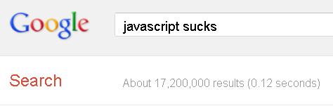

- John Arthorne, IBM Canada
- John Arthorne, IBM Canada
This guy is crazy or confused.
- John Arthorne, IBM Canada
Yay, he's going to reveal secrets about the next Eclipse release.
This public communication may include written or oral forward-looking statements. Statements of this type may be included in other filings with Canadian securities regulators or the U.S. Securities and Exchange Commission, or in other communications. All such statements are made pursuant to the “safe harbor” provisions of, and are intended to be forward-looking statements under, the United States Private Securities Litigation Reform Act of 1995 and any applicable Canadian securities legislation. Forward-looking statements may involve, but are not limited to, comments with respect to our objectives and priorities for 2012 and beyond, our strategies or future actions, our targets, expectations for our financial condition or share price, and the results of or outlook for our operations or for the Canadian and U.S. economies. By their nature, forward-looking statements require us to make assumptions and are subject to inherent risks and uncertainties. There is significant risk that predictions, forecasts, conclusions or projections will not prove to be accurate, that our assumptions may not be correct and that actual results may differ materially from such predictions, forecasts, conclusions or projections. We caution readers of this Annual Report not to place undue reliance on our forward-looking statements as a number of factors could cause actual future results, conditions, actions or events to differ materially from the targets, expectations, estimates or intentions expressed in the forward-looking statements. The future outcomes that relate to forward-looking statements may be influenced by many factors, including but not limited to: general economic and market conditions in the countries in which we operate; weak, volatile or illiquid capital and/or credit markets; interest rate and currency value fluctuations; changes in monetary, fiscal or economic policy; the degree of competition in the geographic and business areas in which we operate; changes in laws or in supervisory expectations or requirements, including capital, interest rate and liquidity requirements and guidance; judicial or regulatory proceedings; the accuracy and completeness of the information we obtain with respect to our customers and counterparties; our ability to execute our strategic plans and to complete and integrate acquisitions; critical accounting estimates and the effect of changes to accounting standards, rules and interpretations on these estimates; operational and infrastructure risks; changes to our credit ratings; general political conditions; global capital markets activities; the possible effects on our business of war or terrorist activities; disease or illness that affects local, national or international economies; natural disasters and disruptions to public infrastructure, such as transportation, communications, power or water supply; technological changes; and our ability to anticipate and effectively manage risks associated with all of the foregoing factors.
Source: Gartner and company reports; Asymco estimates
Source: Gartner and company reports; Asymco estimates
Source: NBC
Image source: photobucket.com
There is a spectrum of change we are on.
- David Clark, "Post-PC Internet", April 1999
I think the biggest mistake that we made, as a company, is betting too much on HTML5
- Mark Zuckerberg, Disrupt SF, September 2012
And it's not that HTML5 is bad. I'm actually, on long-term, really excited about it. One of the things that's interesting is we actually have more people on a daily basis using mobile Web Facebook than we have using our iOS or Android apps combined. So mobile Web is a big thing for us.
- Mark Zuckerberg, Disrupt SF, September 2012
Source: Ohloh
Source: Eclipse Foundation
Eclipse is the best place to do commercial friendly open source